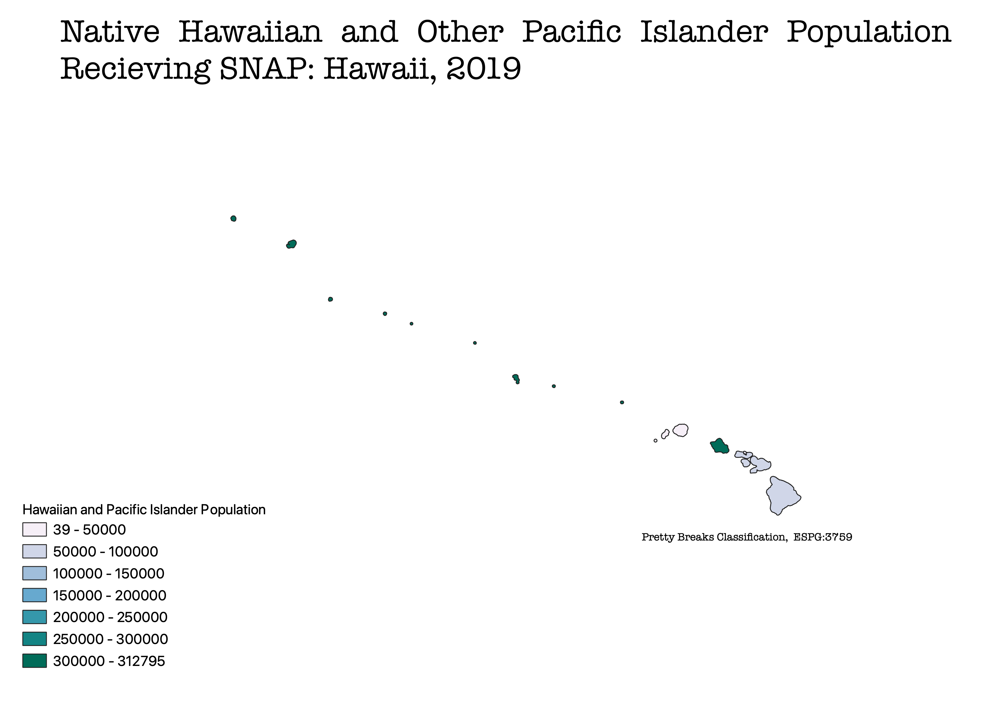
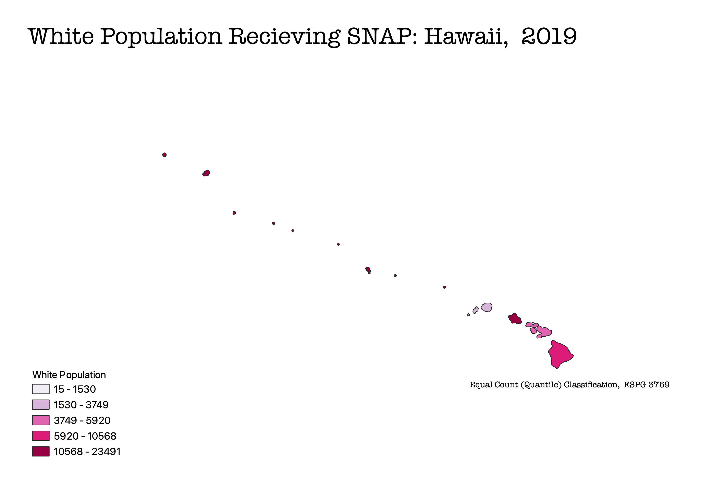

Different Classification Methods for Representing Ethnicity and SNAP Benefits In Hawaii, 2019
Aislynn Grantz
Description of Project: All maps are representative of Hawaii in 2019 regarding the number of households that recieving SNAP benefits or foodstamps per county. These maps differ in representing how ethnicity and race affect the amount of households recieve SNAP. Based on the data for all ethnicities, Honolulu County recieves the overall highest amount of SNAP benefits and Kalawao County overall recieves the lowest amount of SNAP. This data can further be extrapolated to inference that while the demography of people recieving SNAP is heaviliy influenced by race, but also by location.
Mode One: Pretty Breaks Classification
Using the pretty breaks classification is useful for presenting aesthetically pleasing, easily readable, and evenly distributed data. A limitation of using this classification is when dealing with skewed or data heavily clustered because the data might not fall into all classes.

Mode Two: Equal Interval Classification
Using the equal interval classification appeals to logos, as the data is equally distributed in a systematic fashion. The intervals of data are equally sized, allowing for efficient reading of the data. A limitation of the equal interval classification is when data with outliers are plotted or when the data is skewed to one side. The intervals will increase and will cluster data together which presents inaccurate intervals.

Mode Three: Equal Count (Quantile) Classification
The equal count (quantile) classification displays data intervals effectively, however, it does not create aesthetically pleaseing breaks in the data. This classification does make the data look balanced, yet this can be decieving because of how this classification groups data within these equal bins.
